全球機器人運動會 · 臺灣賽區
GRG 2027 新賽季：HEALTH HACKERSGlobal Robotics Games Taiwan
2027 賽季主題對應聯合國 SDG 3「健康與福祉」：用機器人與 AI 解決醫療與健康的難題。
創意賽隊伍提早準備囉！
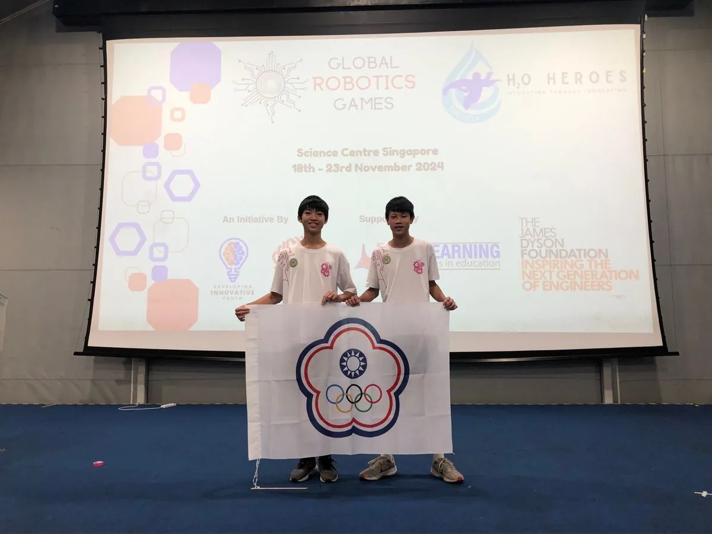
GRG 2027 賽季
- 主題
- HEALTH HACKERS（聯合國 SDG 3 健康與福祉）
- 世界賽
- 日期與地點：官方公布後更新
- 組別
- 組別與規則：官方公布後更新
- 臺灣賽
- 賽程確定後公布
GRG 2026 世界總決賽（新加坡，已完賽）
- 主題
- Mission Meals（聯合國 SDG 2 消除飢餓）
- 地點
- One World International School - Digital Campus（27 Punggol Field Walk）
- 組別
- Preschool (KUBO)、AI Maker Series、Mobile Robotics 1–4、Open Category
- 臺灣隊
- 配合代表團統一行程；機票與住宿由合作旅行社辦理
012027 新賽季主題預告
創意賽隊伍提早準備囉！
HEALTH HACKERS
對應聯合國永續發展目標 SDG 3：健康與福祉（Good Health and Well-being）
GRG 國際主辦公布 2027 賽季主題為「HEALTH HACKERS」。參賽隊伍要運用自主機器人、AI 診斷、輔具與智慧環境系統，找出並解決醫療與健康照護上的瓶頸。
GRG 每年以一項聯合國永續發展目標為主題：2025 消除貧窮 → 2026 Mission Meals 糧食安全 → 2027 健康與福祉。
世界賽日期與地點、組別、規則書尚未公布；官方公布後會在這裡更新，臺灣賽程確定後也會在 LINE 群組通知。
0310/25 臺灣推廣賽 成績公告
恭喜所有獲獎隊伍
機器人趣味相撲 自動組（國小）
| 名次 | 隊名 | 學校／單位 |
|---|---|---|
| 冠軍 | 福克斯01 | 福克斯機器人 |
| 亞軍 | 文欣好棒棒01 | 桃園市立文欣國小 |
| 季軍 | 福克斯02 | 福克斯機器人 |
| 季軍 | 福克斯03 | 福克斯機器人 |
| 名次 | 隊名 | 學校／單位 |
|---|---|---|
| 第一名 | 同德好棒棒 | 同德國小 |
| 第二名 | 文欣好棒棒02 | 桃園市立文欣國小 |
| 第三名 | 福克斯04 | 福克斯機器人 |
| 優勝 | 富台1-文欣好棒棒04 | 富台國小 |
| 優勝 | 文欣好棒棒03 | 桃園市立文欣國小 |
| 優勝 | 富台2 | 富台國小 |
| 表現優異 | 張允睿 | 老莫機器人 |
| 表現優異 | 桃小2 | 桃園國小 |
| 名次 | 隊名 | 學校／單位 |
|---|---|---|
| 第一名 | 文欣國小 | 桃園市立文欣國小 |
| 第二名 | 福克斯05 | 福克斯機器人 |
| 第三名 | 何睿祥 | 老莫機器人 |
| 優勝 | 鍾弈凡 | 老莫機器人 |
| 優勝 | 內定1 | 內定國小 |
| 優勝 | 桃小1 | 桃園國小 |
| 表現優異 | 霄相拳 | 桃園市霄裡國小 |
| 表現優異 | 內定2 | 內定國小 |
機器人趣味相撲 自動組（國高中）
| 名次 | 隊名 | 學校／單位 |
|---|---|---|
| 冠軍 | 桃園好棒棒04 | 崇林國中 |
| 亞軍 | 北科好棒棒 | 福克斯機器人 |
| 季軍 | 六和酷比5 | 六和高中國中部 |
| 季軍 | 桃園好棒棒05 | 桃園國中 |
| 名次 | 隊名 | 學校／單位 |
|---|---|---|
| 第一名 | 六和酷比3 | 六和高中國中部 |
| 第二名 | 大膽竹夢C隊 | 桃園市立大竹國民中學 |
| 第三名 | 六和酷比1 | 六和高中國中部 |
| 優勝 | 大膽竹夢K隊 | 桃園市立大竹國民中學 |
| 優勝 | 大膽竹夢B隊 | 桃園市立大竹國民中學 |
| 優勝 | 大膽竹夢A隊 | 桃園市立大竹國民中學 |
| 表現優異 | 六和酷比4 | 六和高中國中部 |
| 表現優異 | 六和酷比2 | 六和高中國中部 |
| 表現優異 | 大膽竹夢H隊 | 桃園市立大竹國民中學 |
| 名次 | 隊名 | 學校／單位 |
|---|---|---|
| 第一名 | 治平好棒棒02 | 治平高中 |
| 第二名 | 治平好棒棒01 | 治平高中 |
| 第三名 | 治平好棒棒04 | 治平高中 |
| 優勝 | 桃園好棒棒03 | 桃園國中 |
機器人趣味相撲 遙控組
| 名次 | 隊名 | 學校／單位 |
|---|---|---|
| 冠軍 | 贏了就隊 | 積動城市 |
| 亞軍 | Supernova | 積動城市 |
| 季軍 | [大華]有沒有一種可能 | 積動城市 |
| 季軍 | 哇係南波萬 | 積動城市 |
| 名次 | 隊名 | 學校／單位 |
|---|---|---|
| 第一名 | 山貓 戰鬥吧！ | 積動城市 |
| 第二名 | 無敵推手 | 創匠機器人創意中心 |
| 第三名 | 許書愷 | 老莫機器人 |
| 名次 | 隊名 | 學校／單位 |
|---|---|---|
| 第一名 | 福科YouBike | 積動城市 |
| 第二名 | 極限推進 | 積動城市 |
| 第三名 | 超頻獵手 | 創匠機器人創意中心 |
| 優勝 | 絕地衝撞 | 創匠機器人創意中心 |
| 優勝 | 我愛手機 | 積動城市 |
| 優勝 | Go Rolling | 積動城市 |
| 名次 | 隊名 | 學校／單位 |
|---|---|---|
| 第一名 | Vortex1 | 積動城市 |
機器人趣味循跡
| 名次 | 隊名 | 學校／單位 |
|---|---|---|
| 第一名 | 福克斯好棒棒02 | 福克斯機器人 |
| 第二名 | 福克斯好棒棒03 | 福克斯機器人 |
| 第三名 | 福克斯好棒棒 | 福克斯機器人 |
| 名次 | 隊名 | 學校／單位 |
|---|---|---|
| 第一名 | 六和酷比6 | 六和高中國中部 |
| 第二名 | 六和酷比7 | 六和高中國中部 |
| 名次 | 隊名 | 學校／單位 |
|---|---|---|
| 第一名 | 桃園好棒棒02 | 桃園國中 |
| 第二名 | 治平好棒棒03 | 治平高中 |
| 第三名 | 桃園好棒棒01 | 內壢高中 |
Mobile Robotics II／III
| 名次 | 隊名 | 學校／單位 |
|---|---|---|
| 冠軍 | 這次一定行 | 創匠機器人創意中心 |
| 名次 | 隊名 | 學校／單位 |
|---|---|---|
| 冠軍 | 再次同一隊 | 創匠機器人創意中心 |
| 亞軍 | 程風破浪 | 創匠機器人創意中心 |
| 季軍 | 合作無間 | 創匠機器人創意中心 |
| 季軍 | JGJHS | 桃園市立經國國中 |
| 表現優異 | JGJHS02 | 桃園市立經國國中 |
| 表現優異 | KCIS ARK | 新北市康橋高級中學 |
| 表現優異 | JGJHS03 | 桃園市立經國國中 |
相撲「總名次」為決賽結果；相撲其他名次依預賽成績排列（不含進入決賽的隊伍）。
0410/25 臺灣推廣賽 活動照片
精選 36 張，點照片看大圖
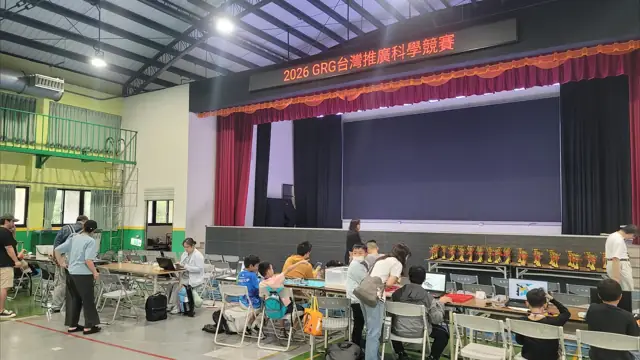
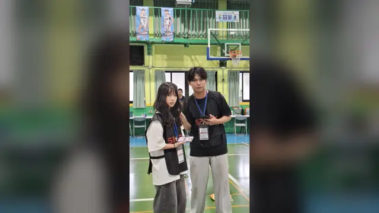
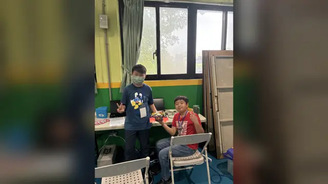
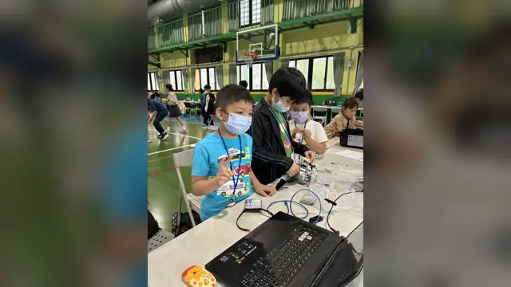
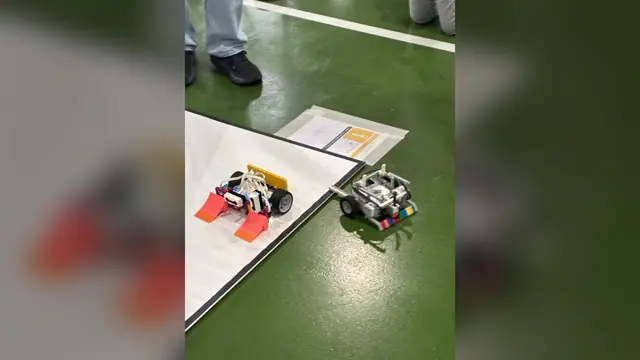
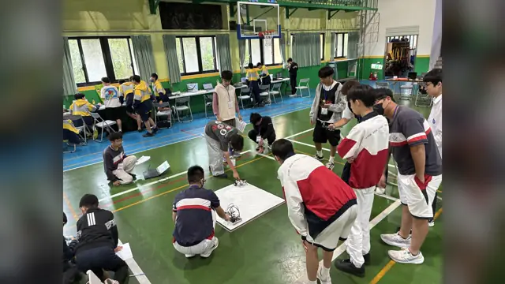
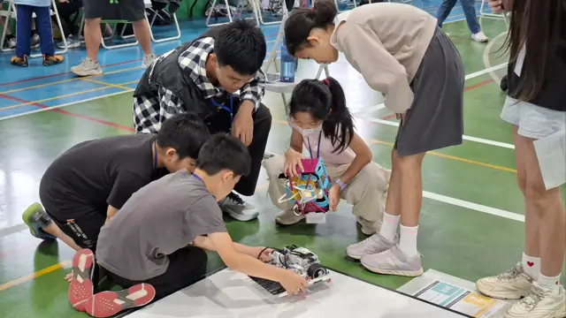
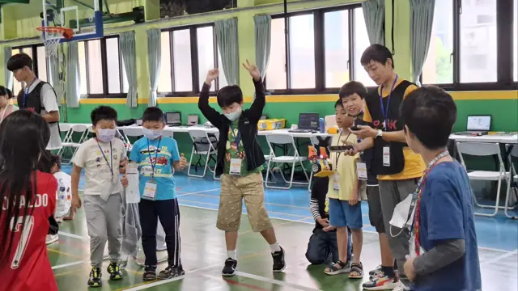
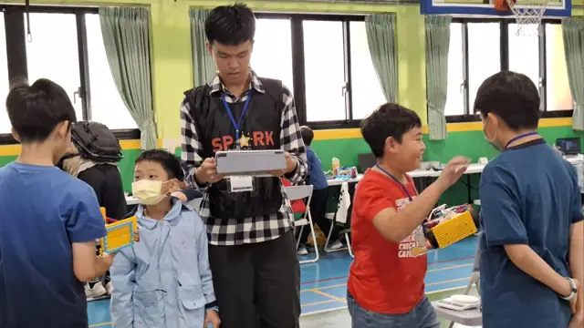
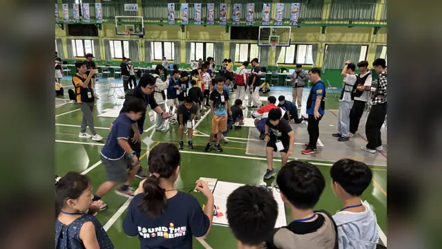
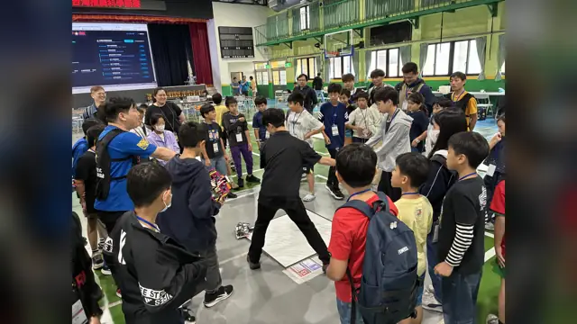
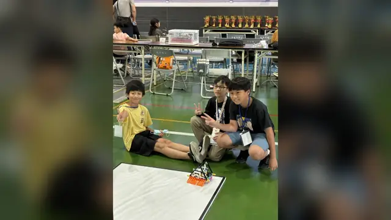
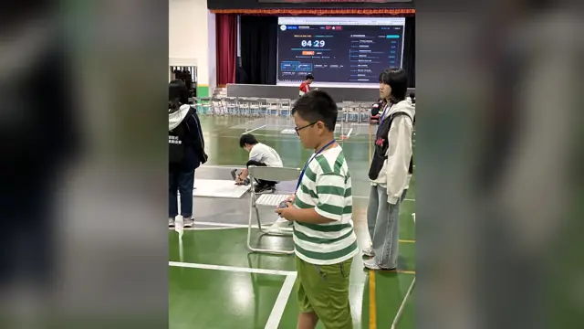
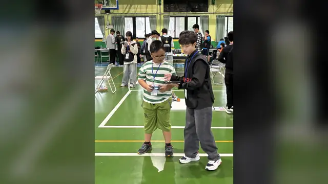
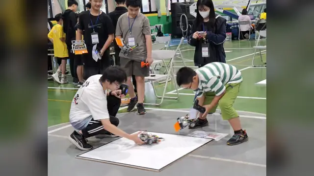
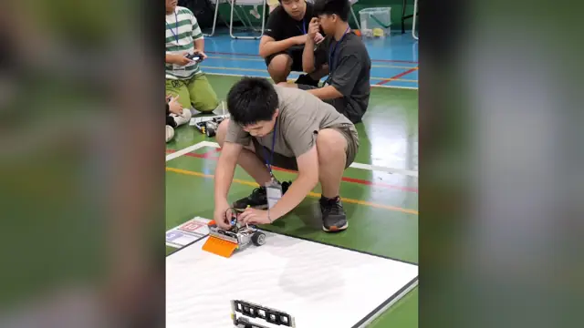
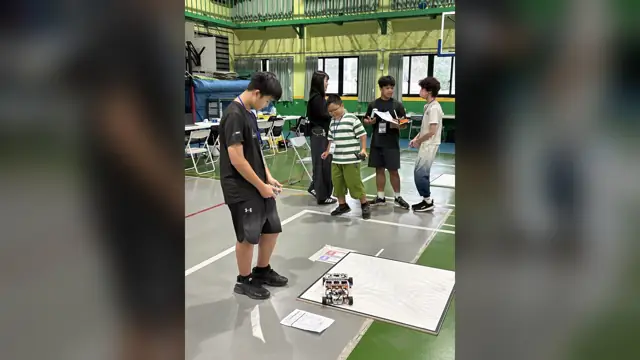
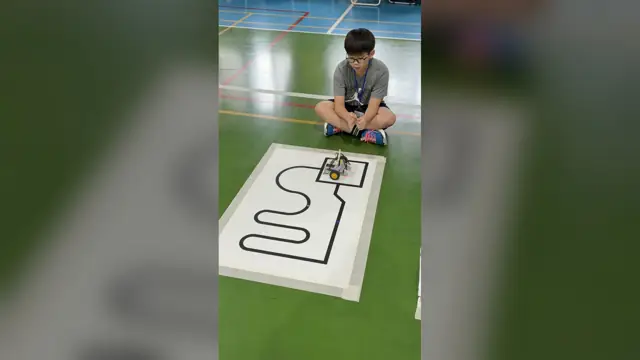
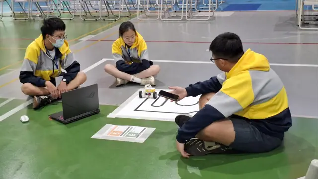
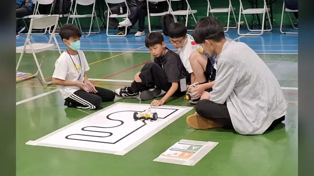
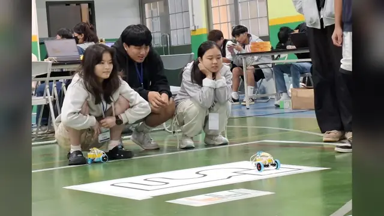
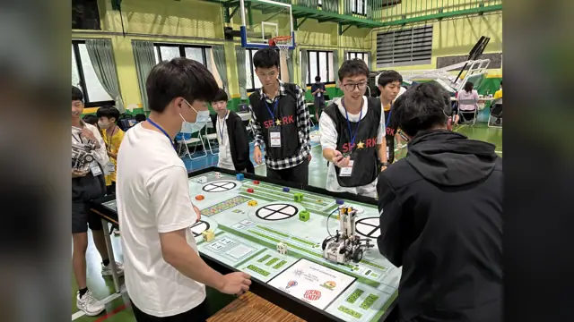
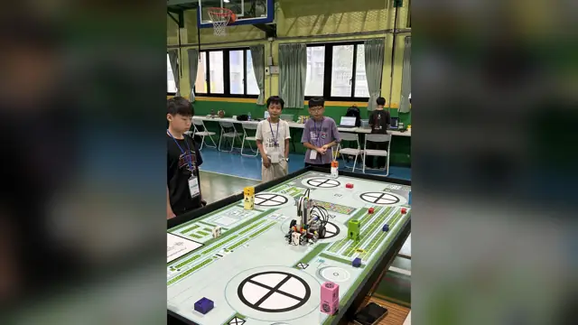
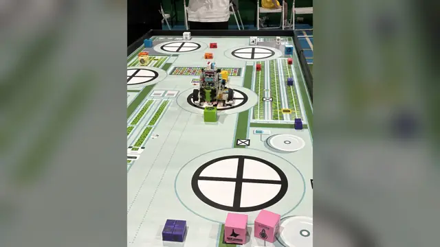
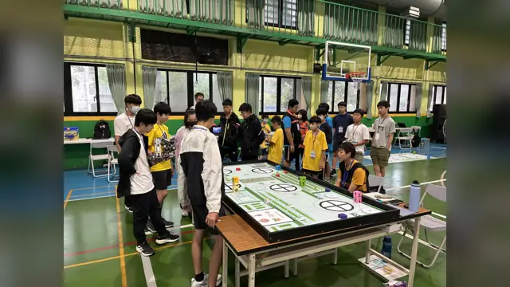
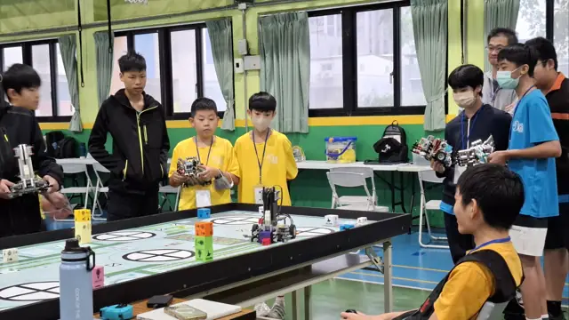
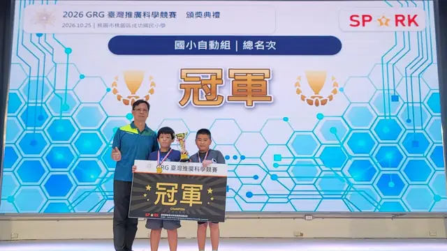
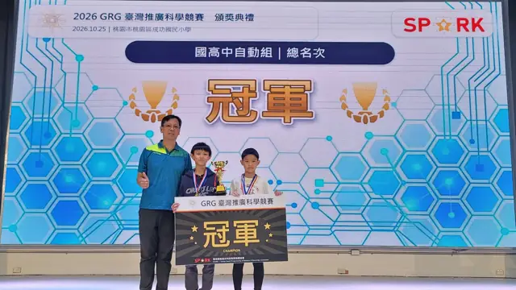
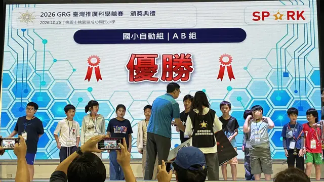
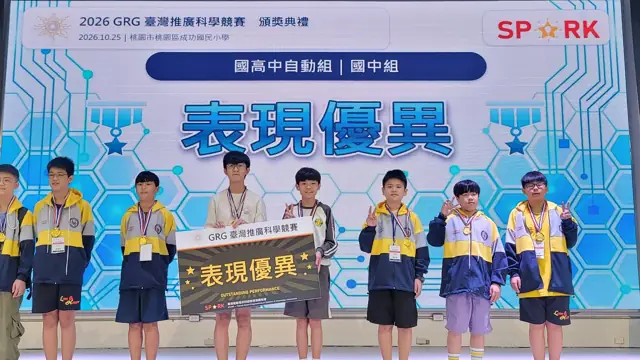
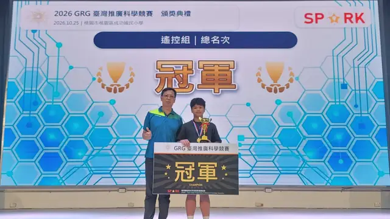
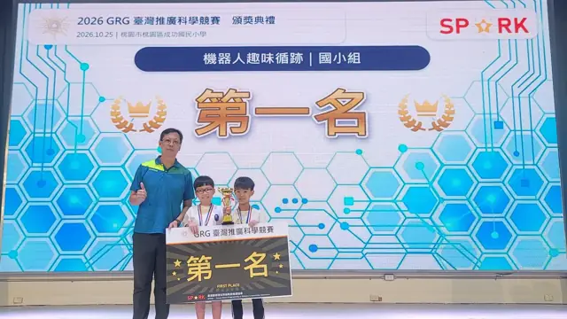
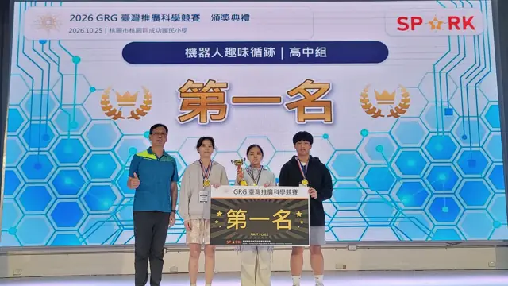
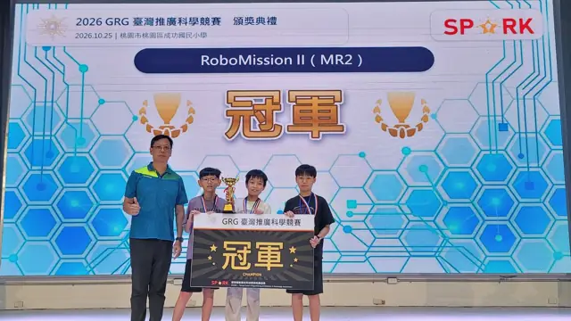
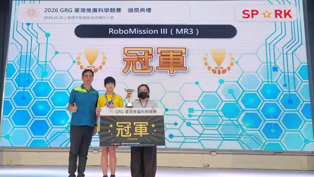
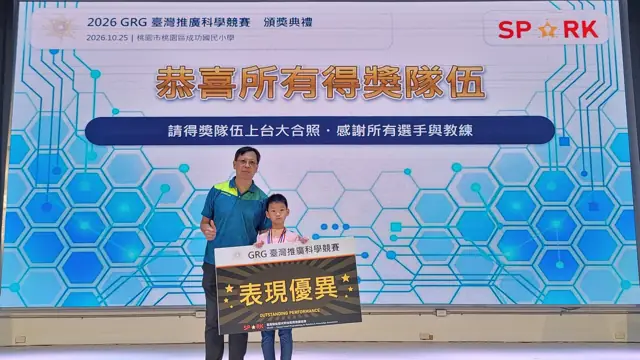
06組別與規則
10/25 臺灣推廣賽
新加坡世界總決賽組別
總決賽後另有新加坡文化行程，機票、住宿與行程由合作旅行社辦理與報價。
07精彩回顧
「打相撲第一次聽到全場都是笑聲」


08常見問題
什麼是 GRG？
GRG（Global Robotics Games 全球機器人運動會）是青少年機器人與人工智慧挑戰賽，強調實作、演算法與跨領域應用。2026 臺灣賽區由臺灣智能程式科技教育推廣協會（SPARK）主辦。
有哪些組別與年齡限制？
MR1：7–9 歲；MR2／MR3：10–16 歲；AI Maker Series：小學 9–12 歲、中學 12–17 歲；MR4：17 歲以上；Open 公開組：國小至高中職。10/25 臺灣推廣賽另有機器人趣味相撲與趣味循跡。
怎麼報名？
填寫線上報名表，匯款後填寫匯款表單，再加入 LINE 群組接收賽前通知。
臺灣推廣賽的名次可以去新加坡嗎？
MR2、MR3 各組前三名獲新加坡世界總決賽優先邀請資格。前往新加坡的隊伍須配合代表團統一行程，機票與住宿由合作旅行社辦理。